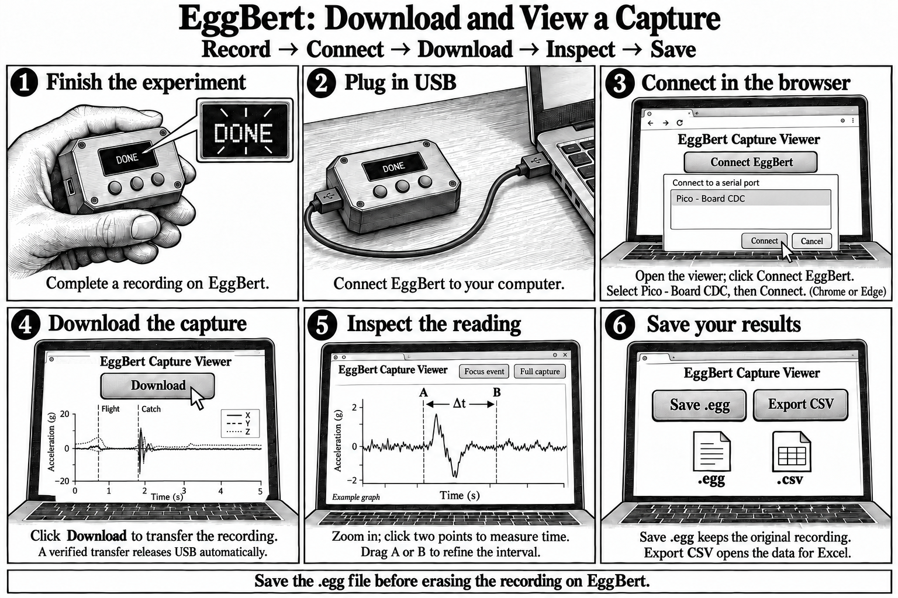

Download and View a Capture
This guide starts with a recording already stored on EggBert.


Download and save your recording
- Finish the experiment and wait for EggBert to show DONE or the completed recording result.
- Connect EggBert to your computer with a USB data cable.
- Open the Capture Viewer in Chrome or Edge. Click Connect EggBert, select Pico - Board CDC in the browser chooser, then click Connect. The COM port number may vary.
- Click Download to transfer the stored recording and display its graph. A verified transfer releases the USB connection automatically.
- Zoom in and click two points on the chart to measure elapsed time. Drag cursor A or B to refine the interval. Use Focus event or Full capture to adjust the view.
- Click Save .egg to keep the original recording. Use Export CSV to save data for Excel.
Save the .egg file before erasing the recording on EggBert.